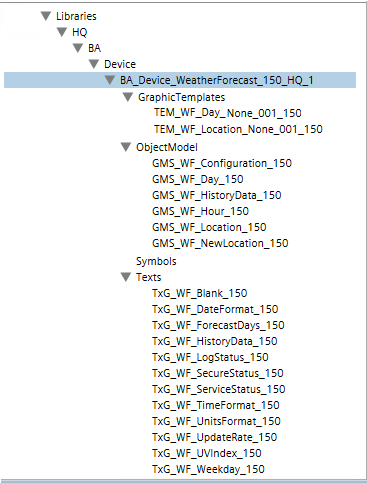

Weather Forecast Integration
The Weather Forecast extension is the common library required to allow integration of weather forecasts services in Desigo CC.
Library
The Weather Forecast extension installs the Desigo CC library BA_Device_WeatherForecast_150_HQ_1, which is available at Project > System Settings > Libraries > L1-Headquarter > BA > Device.

For more details, see Weather Forecast Graphic Templates, Weather Forecast Object Models, and Weather Forecast Symbols.
This library also provides a set of text groups to cover the different status information and the need of localizable texts for this integration.
Dependencies
The Weather Forecast extension is configured to depend on the following extension, which will be automatically added, if it is not already installed in the system, when the Weather Forecast installation feature is selected:
- SORIS Driver (see SORIS)